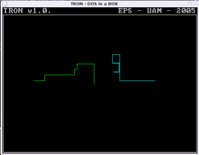

 |
|
En esta página encontramos una serie de programas de ejemplo para facilitar la realización de la práctica. El objetivo de la práctica es programar el programa TRON en ensamblador y aprender a combinar el lenguaje C con el ensamblador. Para ello se han propuesto una serie de objetivos a cumplir durante el curso, dichos objetivos se muestran en la página principal de la asignatura, mantenida por el profesor Guillermo González de Rivera Peces. El alumno podrá utilizar este código siempre y cuando lo entienda, ya que podrá ser objeto de evaluación.
En los laboratorios de la Escuela encontraremos una partición con MSDOS con todas las herramientas necesarias para hacer la práctica. Todos los trabajos de los alumnos se corregirán en clase en dicho entorno. Opcionalmente existe la posibilidad de utilizar los emuladores de MSDOS para poder trabajar en casa sin necesidad de instalar el MSDOS.
| Programa | Descripción | Enlace | Última actualización |
| Cursor | Programa que mueve un caracter por la pantalla. Acceso directo al modo texto. Teclas O,P,Q,A,'.' para salir | cursor.asm | 7-nov-06 |
| Makefile | Ejemplo de fichero Makefile sencillo. El programa que compila se llama driver.asm | Makefile | 7-nov-06 |
| Prueba Driver | Ejemplo de programa que verifica que hay un driver instalado en la INT61H | driver.asm | 7-nov-06 |
| Efecto | Programa que rota un caracter en la esquina superior derecha. No usa interrupciones.Optimizado para CPU 386sx | efecto.asm | 13-ene-05 |
| Sonido | Programa que muestra como usar el tercer timer para generar sonidos | sonido.asm | 08-dic-04 |
| Timer | Programa que usa las interrupciones del Timer0 para rotar un caracter | timer.asm | 08-dic-04 |
| RTC | Programa que usa las interrupciones del RTC para rotar un caracter. Este es el mecanismo a seguir en la practica 3 | rtc.asm | 13-ene-05 |
| Driver | Ejemplo de estructura basica del driver. Preparado para generacion de archivo .COM | drvmio.asm | 07-dic-04 | Paralelo | Programa ejemplo de envio de datos por el puerto paralelo. Hace parpadear un LED por espera activa. (Optimizado para CPU 386) | paralelo.asm | 13-ene-05 | Paralelo-I | Programa ejemplo de envio de datos por el puerto paralelo. Hace parpadear un LED mediante el RTC | paralelo1.asm | 13-ene-05 | Paralelo-II | Programa que enciende un LED cuando detecta que se ha apretado un pulsador. Ejemplo de envío y recepción en el puerto paralelo. | paralelo2.asm | 13-ene-05 |
El Bit 5 (Bidireccional On/Off) no me funciona. (23-ene-2005)
En algunos ordenadores el bit del registro de control que controla la Bi-direccionalidad del puerto no es el bit 5. Por ejemplo en los ordenadores Toshiba modelo T2000SX es el bit 7. En los ordenadores del Laboratorio es el bit 5.
| IEA ROBOTICS | Página de inicio |
| Andrés Prieto-Moreno Torres | Página Personal |